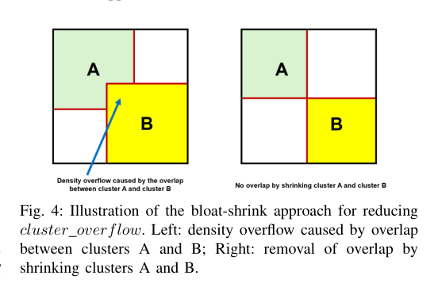
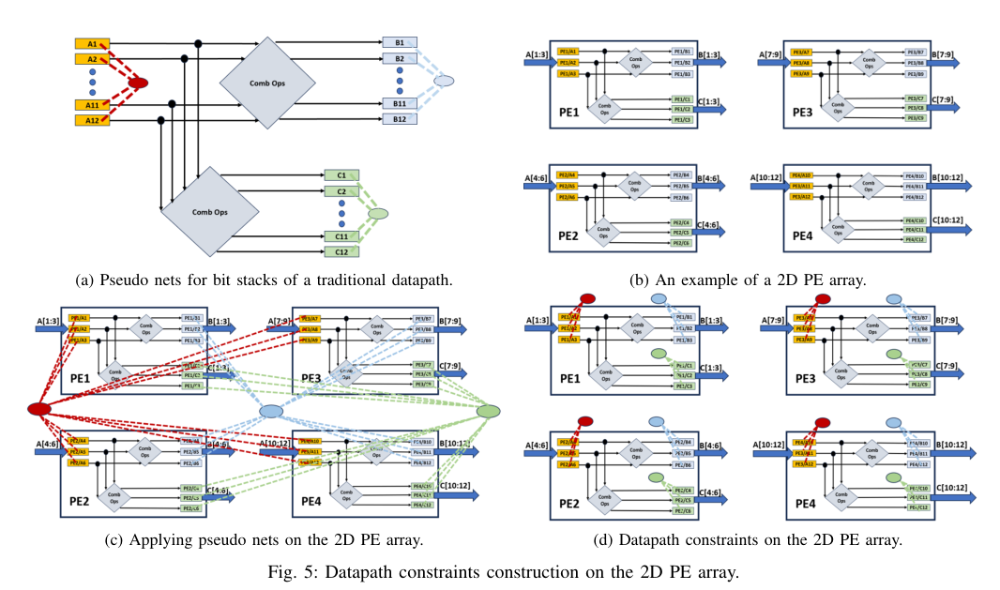

本报告由大模型自动生成，可能存在理解、归纳或数据转述错误；请以原论文为准。 DG-RePlAce: A Dataflow-Driven GPU-Accelerated Analytical Global Placement Framework for Machine Learning AcceleratorsAndrew B. Kahng, Zhiang Wang · IEEE Transactions on Computer-Aided Design of Integrated Circuits and Systems · 2024 · 原文 · PDF 报告模型：gemini-3.1-pro-preview / high 这篇文章介绍了一种名为 DG-RePlAce 的全局布局（Global Placement）框架。该框架专为现代机器学习（ML）加速器设计，通过提取并利用芯片架构层面的数据流（Dataflow）和数据路径（Datapath）信息，结合 GPU 加速的解析布局算法，解决了传统电子设计自动化（EDA）工具在处理包含大规模二维处理单元（PE）阵列时面临的运行时间长、布局质量差（特别是破坏了原有数据流向）的问题。 以下是按论文结构进行的详细、连续的解析。 第一部分：引言与研究背景 (Introduction & Preliminaries)在超大规模集成电路（VLSI）的物理设计流程中，全局布局是一个关键步骤。它的任务是在给定的芯片二维平面内，为所有的标准单元（Standard Cells，实现基本逻辑功能的基础模块）和宏单元（Macros，如大块的 SRAM 存储器或预设计的复杂模块）分配具体的坐标位置。在这一阶段，目标是最小化总连线长度（Wirelength）并确保器件在空间上分布均匀（无物理重叠）。 近年来，以脉动阵列（Systolic Array）为代表的二维机器学习加速器被广泛应用。脉动阵列（背景补充：一种由高度规则的处理单元 PE 组成的网格架构，数据在其中像脉搏一样有节奏地按特定方向流动和计算）通常包含数以百万计的逻辑门和宏单元。传统学术界先进的全局布局器（如基于 CPU 的 RePlAce 或基于 GPU 的 DREAMPlace）将这些设计视为无规则的随机逻辑（Random Logic）图。由于它们不理解微架构中固有的“数据从左到右流入、从上到下累加”的规则，往往会将属于不同处理单元的逻辑强行混合放置在一起，导致最终布线极度混乱，不仅恶化了时序和功耗，也大大增加了布局器的运行时间。 本文提出的 DG-RePlAce 就是为了填合“体系结构设计”与“EDA 物理实现”之间的鸿沟。它基于开源框架 OpenROAD 构建，利用 GPU 加速，通过显式地将微架构中的数据流和数据路径规律转化为 EDA 布局引擎能够理解的“物理约束”，引导布局器生成高质量的结果。 核心基础：基于静电学模型的解析布局本文的底层优化引擎沿用了静电学布局（Electrostatics-Based Placement）方法。在这种物理隐喻中，芯片上的实例（单元）被视为带有电荷的粒子，它们之间存在排斥力以防止重叠（密度代价）；而连接这些实例的连线则被视为弹簧，产生吸引力以拉近相连的器件（线长代价）。全局布局问题被建模为以下无约束非线性优化问题： 在这个公式中：
由于精确的半周长线长（HPWL）不可导，作者采用了加权平均（Weighted-Average, WA）线长模型作为 的平滑可导近似。对于某个线网 ，其 WA 线长在 方向上的分量计算公式为： 公式中的符号定义如下：
为了使用梯度下降法（具体为 Nesterov 方法）进行优化，必须计算上述线长代价对每个引脚坐标 的梯度。梯度的展开形式（如原文 Equation 3 所示）极其复杂，其中包含了多个关于所有引脚坐标指数项的局部极值求和（如 等，单位均原文未说明）。其中，承载语义的下标 代表引脚（原文未说明单位），下标 代表线网（原文未说明单位），上标 代表与最大值相关（原文未说明单位）。具体而言， 定义为 （其中 为线网 中引脚的最大 坐标）， 定义为 ， 定义为 。传统 GPU 布局器（如 DREAMPlace）在计算这一庞大梯度时面临高扇出线网（连接成百上千个引脚的线网）带来的严重内存和计算瓶颈。 第二部分：本文方法 (Our Approach)为了在全局布局中融入架构信息并提升速度，DG-RePlAce 设计了包含四个主要步骤的处理流程。 1. 物理层次提取 (Physical Hierarchy Extraction)传统的逻辑网表仅反映代码模块的划分，而物理层次提取旨在将网表重组为“物理簇（Clusters）”。在这个阶段，作者调用了开源工具 Hier-RTLMP 的多层自动聚类功能，将原本庞大的门级网表转化为由多个簇组成的粗粒度网表。属于同一簇的实例在物理空间上预期应当靠拢。 2. 数据流驱动的初始全局分布 (Dataflow-Driven Initial Global Distribution)这是跨层协同的核心体现。在计算机体系结构与 EDA 的跨层接口中，传递的量是数据流信息（连接位宽和寄存器跳数），目标是引导布局器生成与数据流结构一致的布局。这里的建模假设是将数据流转化为虚拟连线（Virtual Connections）的拉力权重。此过程存在信息损失：当寄存器距离（）大于 4 时，虚拟连线被截断为 0，且复杂的流水线行为被简化为静态的权重公式。两个簇 A 和 B 之间的虚拟连线权重计算如下： 其中：
这个公式将架构侧的数据吞吐量和流水线深度，直接转换为了 EDA 布局器中的拉力权重：位宽越宽、流水线级数越少的两个模块，在物理上会被更强地拉扯在一起。 膨胀-收缩（Bloat-Shrink）合法化机制：如果直接在有很多空白空间（Whitespace）的芯片区域对粗粒度的簇进行解析布局，会导致算法发散。为了解决这个问题，作者提出先强行“膨胀”每个簇的面积，使其总和填满整个芯片区域（使用 ）；进行初步布局后，如果发现局部密度溢出（即发生过度重叠），再利用预设的收缩因子（）缩小簇的面积。这就保证了在布局初期既能遵循数据流向，又不会产生非法的堆叠（如图 4 所示）。  随后，作者为同一簇内的所有标准单元添加一个“星型模型”的伪线网（Pseudo Net），强制它们在后续细粒度布局中保持聚拢。 3. 数据路径约束构建 (Datapath Constraints Construction)如果说“数据流”是宏观的模块间移动，“数据路径”则是微观下对多个比特位进行并行操作的具体电路结构。针对脉动阵列，作者指出了一个关键的硬件约束区别：传统数据路径是连续的位切片结构，而脉动阵列的数据路径为了适应乘加运算，其运算逻辑被分散在了不同的二维 PE（处理单元）中（如图 5 所示）。在此处的跨层接口中，传递的约束是数据路径信息，建模假设是将同一簇内的局部对齐组转化为局部伪线网（Pseudo Nets）。此过程的信息损失在于，将多引脚的伪线网通过星型模型（Star Model）简化为多个两引脚线网。  如果像过去的方法那样把整个位宽的电路强行绑定在一个全局伪线网上，会导致属于不同 PE 的实例严重重叠。因此，DG-RePlAce 在每个簇的内部局部应用伪线网。为了保证后续布局的密度合法性，这些伪线网的拉力惩罚权重 会随着迭代次数的增加而指数级衰减： 其中：
这意味着在布局初期，数据路径紧密靠拢；而在后期，为了满足设计规则不发生重叠，这种拉力会逐渐让位于密度排斥力。 4. 并行解析布局 (Parallel Analytical Placement)在生成所有约束后，需要进行细粒度的 GPU 加速布局。针对上文提到的高扇出线网梯度计算慢的问题，作者提出了一种新的并行线长梯度计算算法（Algorithm 1）。
第三部分：实验评估 (Experimental Results)作者在 12nm 商业工艺节点上，使用 VeriGOOD-ML 平台生成的两类机器学习加速器（Tabla 序列和 GeneSys 序列）对该框架进行了评估，并将所有结果通过 Cadence Innovus 完成了布线和时序分析（即所有指标均基于真实的 Post-route 结果，而非前期估算）。 1. 性能提升结果：
2. 运行时间与系统约束分析：
3. 对比消融实验：
第四部分：总结与文章主线 (Conclusion & Core Storyline)文章主线脉络： 文章从一个明确的系统级痛点出发：现代二维机器学习加速器规模巨大且具有极其规则的数据流动模式，而传统的 EDA 布局算法盲目求解数学极值，忽略了这些架构意图，导致物理版图混乱且运行缓慢。为了解决这个问题，作者并没有抛弃现有的静电学布局物理模型，而是巧妙地在布局初始化之前，通过解析网表的逻辑层级和位宽信息（物理层次提取），将其转换为纯数学模型可以接受的“权重弹簧（虚拟连线）”和“引力约束（局部伪线网）”。为了支撑这种约束带来的额外计算量并加速求解，作者重构了 GPU 并行求梯度的底层算法。最终实现了从“理解计算机架构意图”到“指导底层物理实现”的全自动跨层协同。 关键局限性与避免过度推广的提示：
|